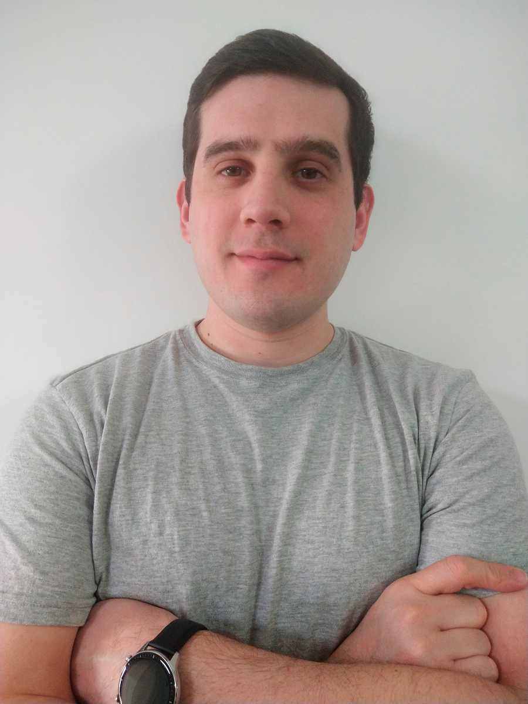

Ezequiel Gimenez | WDD 130
Hello! My name is Ezequiel Gimenez and I am from Rosario, Argentina.
I like pass time with my family, I am married and I have two kids, Isabella and Lucas, I love play with them.
I'm member of the Church and currently serve as Stake clerk.
In my free time enjoy watch movies and play videogames.
I like programming and I am very excited to continue moving forward.